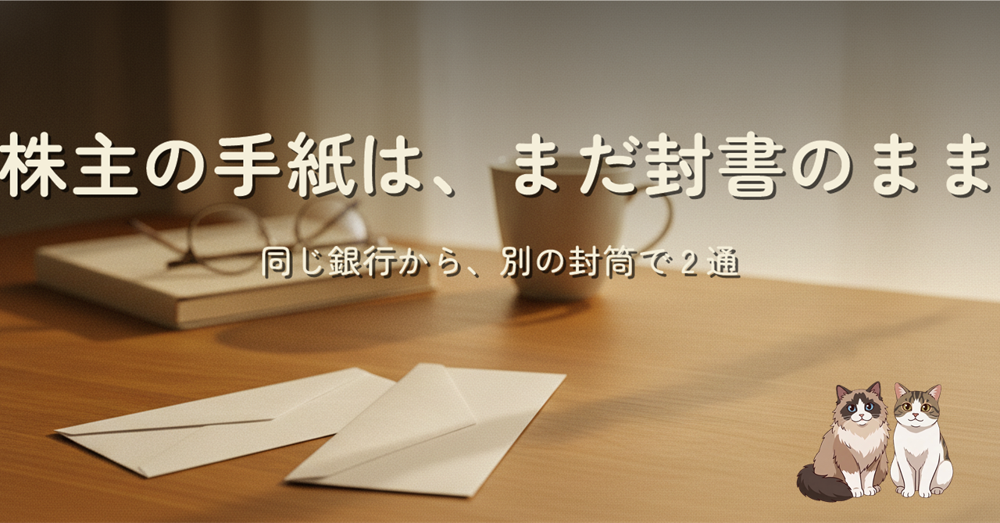
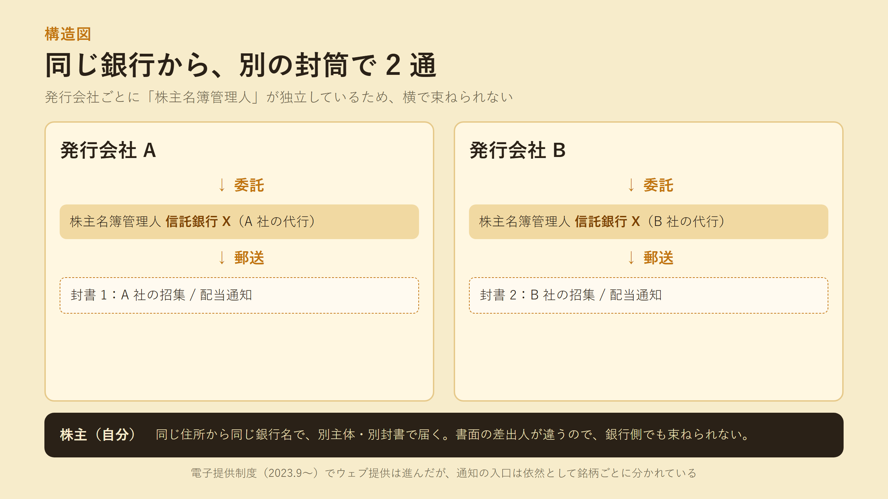
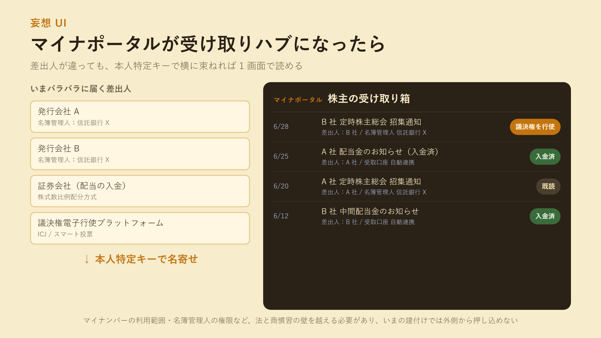

2 銘柄しか持っていないのに、同じ信託銀行から別の封筒で 2 通の総会招集通知が届きました。差出人住所も部署名もそっくり同じ。なのに封筒は 2 通あって、それぞれ片方の銘柄の通知だけが入っている。なんで 1 通にならないんだろう、という素朴な疑問から、株主名簿管理人・電子提供制度・議決権電子行使・マイナポータルの「あったらいいな」までを辿ったエッセイです。
封筒を出している主体は信託銀行ではなく、発行会社です。信託銀行は「株主名簿管理人」として、発行会社の代行で出しているだけ。だから差出人住所が同じでも、書面の主体は別会社で、束ねて 1 通にすることが制度上できない。配当通知も総会招集も、銘柄ごとに独立したラインで届く構造そのものが、一本化を妨げています。
電子提供制度（2023 年 9 月施行）でウェブ提供は進みましたが、株主には「ウェブにここに資料がありますよ」というアクセス通知書が紙で届くため、封筒の枚数は減りません。配当金計算書はまた別系統です。証券会社経由の議決権電子行使プラットフォーム（ICJ / スマート投票）も、橋渡しできているのは「議決権の行使」が中心で、通知配信そのものは束ねられていません。

